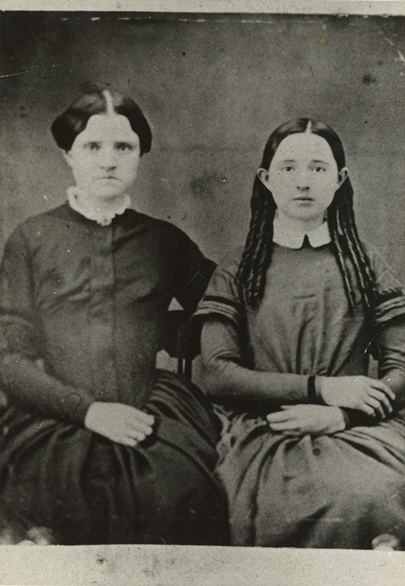
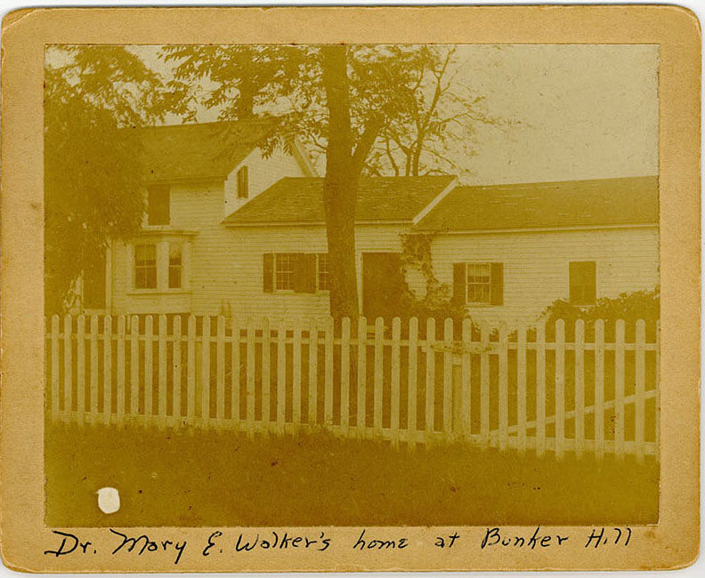

A historic roadside marker on Bunker HIll Road is all that is left at the location of the family farm and birthplace of Dr. Mary Walker. She was born here on November 26, 1832. Her parents were abolitionists Alvah and Vesta Whitcomb Walker. She had four sisters: Aurora, Luna, Vesta, Cynthia, and one brother, Alvah Jr. As a child, her father encouraged his daughters to forgo corsets and wear pants under a short skirt for health reasons. She continued through her life to dress this way, and advocated for dress reform. In her later years, she dressed exclusively in pants and a jacket. Alvah started the first one room schoolhouse in the Town of Oswego and education was encouraged for the girls, which was unusual for the time. Alvah was interested in all kinds of subjects, including medicine, and allowed Mary to read the medical books in his library which inspired her interest in medicine. This was the only permanent home she had during her lifetime; she eventually inherited it and lived here until her death in 1919. The homestead burned in the 1930’s.

Birthplace marker on Bunker Hill Road

Mary & Vesta Walker (Mary's Sister)

Mary Walker in a skirt and cane

Mary's Home that burned down